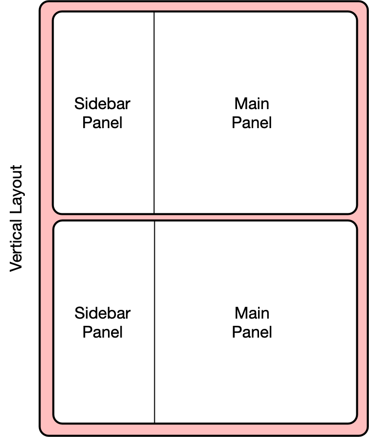
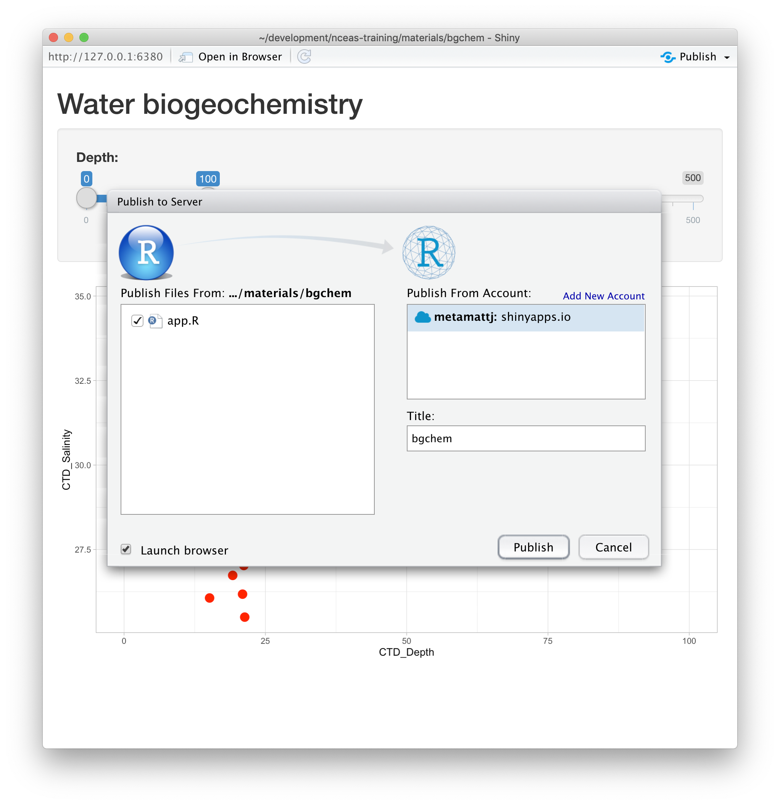

17 Introduction to Shiny
17.1 Learning Objectives
In this lesson we will:
- review the capabilities in Shiny applications
- learn about the basic layout for Shiny interfaces
- learn about the server component for Shiny applications
- build a simple shiny application for interactive plotting
17.2 Overview
Shiny is an R package for creating interactive data visualizations embedded in a web application that you and your colleagues can view with just a web browser. Shiny apps are relatively easy to construct, and provide interactive features for letting others share and explore data and analyses.
There are some really great examples of what Shiny can do on the RStudio webite like this one exploring movie metadata. A more scientific example is a tool from the SASAP project exploring proposal data from the Alaska Board of Fisheries.

Most any kind of analysis and visualization that you can do in R can be turned into a useful interactive visualization for the web that lets people explore your data more intuitively But, a Shiny application is not the best way to preserve or archive your data. Instead, for preservation use a repository that is archival in its mission like the KNB Data Repository, Zenodo, or Dryad. This will assign a citable identfier to the specific version of your data, which you can then read in an interactive visualiztion with Shiny.
For example, the data for the Alaska Board of Fisheries application is published on the KNB and is citable as:
Meagan Krupa, Molly Cunfer, and Jeanette Clark. 2017. Alaska Board of Fisheries Proposals 1959-2016. Knowledge Network for Biocomplexity. doi:10.5063/F1QN652R.
While that is the best citation and archival location of the dataset, using Shiny, one can also provide an easy-to-use exploratory web application that you use to make your point that directly loads the data from the archival site. For example, the Board of Fisheries application above lets people who are not inherently familiar with the data to generate graphs showing the relationships between the variables in the dataset.
We’re going to create a simple shiny app with two sliders so we can interactively control inputs to an R function. These sliders will allow us to interactively control a plot.
17.3 Create a sample shiny application
- File > New > Shiny Web App…
- Set some fields:

- Name it “myapp” or something else
- Select “Single File”
- Choose to create it in a new folder called ‘shiny-demo’
- Click Create
RStudio will create a new file called app.R that contains the Shiny application.
Run it by choosing Run App from the RStudio editor header bar. This will bring up
the default demo Shiny application, which plots a histogram and lets you control
the number of bins in the plot.

Note that you can drag the slider to change the number of bins in the histogram.
17.4 Interactive scatterplots
Let’s modify this application to plot water biogeochemistry data in a scatterplot, and allow aspects of the plot to be interactively changed.
17.4.1 Load data for the example
Navigate to this dataset by Craig Tweedie that is published on the Arctic Data Center. Craig Tweedie. 2009. North Pole Environmental Observatory Bottle Chemistry. Arctic Data Center. doi:10.18739/A25T3FZ8X., and copy the URL for the first csv file called “BGchem2008data.csv”
The data can be read into the application using read.csv(). The data contains chemistry measurements at various times and stations.
data_url <- "https://arcticdata.io/metacat/d1/mn/v2/object/urn%3Auuid%3A35ad7624-b159-4e29-a700-0c0770419941"
bg_chem <- read.csv(data_url, stringsAsFactors = FALSE)
# Sometimes you need to wrap the web address in url() on some platforms
#bg_chem <- read.csv(url(data_url, method = "libcurl"), stringsAsFactors = FALSE)
names(bg_chem)## [1] "Date" "Time" "Station" "Latitude"
## [5] "Longitude" "Target_Depth" "CTD_Depth" "CTD_Salinity"
## [9] "CTD_Temperature" "Bottle_Salinity" "d18O" "Ba"
## [13] "Si" "NO3" "NO2" "NH4"
## [17] "P" "TA" "O2"17.4.2 Add a simple scatterplot using ggplot
A number of chemistry parameters are sensitive to depth, so let’s start by plotting CTD_Salinitiy as
a function of CTD_Depth. We do so by switching out the histogram code for a simple ggplot, like so:
server <- function(input, output) {
output$depthPlot <- renderPlot({
ggplot(bg_chem, mapping = aes(CTD_Depth, CTD_Salinity)) +
geom_point(colour="red", size=4) +
theme_light()
})
}If you now reload the app, it will display the simple scatterplot instead of the histogram. At this point, we haven’t added any interactivity.
In a Shiny application, the server function provides the part of the application
that creates our interactive components, and returns them to the user interface (ui)
to be displayed on the page.
17.4.3 Add sliders to set the min depth and max depth for the X axis
To make the plot interactive, first we need to modify our user interface to include
widgits that we’ll use to control the plot. Specifically, we will add a new slider
for setting the mindepth parameter, and modify the existing slider to be used for
the maxdepth parameter. To do so, modify the sidebarPanel() call to include two
sliderInput() function calls:
sidebarPanel(
sliderInput("mindepth", "Min depth:", min = 0, max = 500, value = 0),
sliderInput("maxdepth", "Max depth:", min = 1, max = 500, value = 50)
)If you reload the app, you’ll see two new sliders, but if you change them, they don’t make any changes to the plot. Let’s fix that.
17.4.4 Connect the slider values to the plot
Finally, to make the plot interactive, we can use the input and output variables
that are passed into the server function to access the current values of the sliders.
In Shiny, each UI component is given an input identifier when it is created, which is used as the name of the value in the input list. So, we can access the minimum depth as input$mindepth and
the max as input$maxdepth. Let’s use these values now by adding limits to our X axis
in the ggplot:
ggplot(bg_chem, mapping = aes(CTD_Depth, CTD_Salinity)) +
geom_point(colour="red", size=4) +
xlim(input$mindepth,input$maxdepth) +
theme_light()At this point, we have a fully interactive plot, and the sliders can be used to change the min and max of the Depth axis.

Looks so shiny!
17.4.5 Negative depths?
What happens if a clever user sets the minimum for the X axis at a greater value than the maximum?
You’ll see that the direction of the X axis becomes reversed, and the plotted points display right
to left. This is really an error condition. Rather than use two independent sliders, we can modify
the first slider to output a range of values, which will prevent the min from being greater than
the max. You do so by setting the value of the slider to a vector of length 2, representing
the default min and max for the slider, such as value = c(0,100). So, delete the second slider,
rename the first, and provide a vector for the value, like this:
Now, modify the ggplot to use this new depth slider value, which now will be returned
as a vector of length 2. The first element of the depth vector is the min, and the
second is the max value on the slider.
ggplot(bg_chem, mapping = aes(CTD_Depth, CTD_Salinity)) +
geom_point(colour="red", size=4) +
xlim(input$depth[1],input$depth[2]) +
theme_light()
17.5 Shiny architecture
A Shiny application consists of two functions, the ui and the server. The ui
function is responsible for drawing the web page, while the server is responsible
for any calculations and for creating any dynamic components to be rendered.
Each time that a user makes a change to one of the interactive widgets, the ui
grabs the new value (say, the new slider min and max) and sends a request to the
server to re-render the output, passing it the new input values that the user
had set. These interactions can sometimes happen on one computer (e.g., if the
application is running in your local RStudio instance). Other times, the ui runs on
the web browser on one computer, while the server runs on a remote computer somewhere
else on the Internet (e.g., if the application is deployed to a web server).
17.6 Extending the user interface with dynamic plots
If you want to display more than one plot in your application, and provide
a different set of controls for each plot, the current layout would be too simple.
Next we will extend the application to break the page up into vertical sections, and
add a new plot in which the user can choose which variables are plotted. The current
layout is set up such that the FluidPage contains the title element, and then
a sidebarLayout, which is divided horizontally into a sidebarPanel and a
mainPanel.

17.6.1 Vertical layout
To extend the layout, we will first nest the existing sidebarLayout in a new
verticalLayout, which simply flows components down the page vertically. Then
we will add a new sidebarLayout to contain the bottom controls and graph.

This mechanism of alternately nesting vertical and horizontal panels can be used
to segment the screen into boxes with rules about how each of the panels is resized,
and how the content flows when the browser window is resized. The sidebarLayout
works to keep the sidebar about 1/3 of the box, and the main panel about 2/3, which
is a good proportion for our controls and plots. Add the verticalLayout, and the
second sidebarLayout for the second plot as follows:
verticalLayout(
# Sidebar with a slider input for depth axis
sidebarLayout(
sidebarPanel(
sliderInput("depth",
"Depth:",
min = 1,
max = 500,
value = c(1, 100))
),
# Show a plot of the generated distribution
mainPanel(
plotOutput("depthPlot")
)
),
tags$hr(),
sidebarLayout(
sidebarPanel(
selectInput("x_variable", "X Variable", cols, selected = "CTD_Salinity"),
selectInput("y_variable", "Y Variable", cols, selected = "d18O"),
selectInput("color_variable", "Color", cols, selected = "P")
),
# Show a plot with configurable axes
mainPanel(
plotOutput("varPlot")
)
),
tags$hr()Note that the second sidebarPanel uses three selectInput elements to provide dropdown
menus with the variable columns (cols) from our data frame. To manage that, we need to
first set up the cols variable, which we do by selecting only the numeric variables
from the bg_chem data frame, and then saving the name in a variable:
bg_chem <- read.csv(url(data_url, method="libcurl"), stringsAsFactors = FALSE) %>%
select(-Date, -Time, -Station)
cols <- names(bg_chem)Don’t forget to add library(dplyr) to the library imports at the top.
17.6.2 Add the dynamic plot
Because we named the second plot varPlot in our UI section, we now need to modify
the server to produce this plot. Its very similar to the first plot, but this time
we want to use the selected vsriables from the user controls to choose which
variables are plotted. These variable names from the $input are character
strings, and so would not be recognized as symbols in the aes mapping in ggplot.
Instead, we can use aes_string() to provide character names for the variables to
be used in the mappings.
output$varPlot <- renderPlot({
ggplot(bg_chem, mapping = aes_string(x = input$x_variable,
y = input$y_variable,
color = input$color_variable)) +
geom_point(size=4) +
scale_color_gradient2(low="midnightblue",
mid="white",
high="firebrick",
midpoint = mean(bg_chem[,input$color_variable])) +
theme_light()Notice that we also use scale_color_gradient2 to set up a continuous color
scale that uses the mean of the chosen color variable as the midpoint of the
color ramp, which makes the display balance nicely.
17.6.3 Finishing touches: data citation
Citing the data that we used for this application is the right thing to do, and easy.
You can add arbitrary HTML to the layout using utility functions in the tags list.
# Application title
titlePanel("Water biogeochemistry"),
p("Data for this application are from: "),
tags$ul(
tags$li("Craig Tweedie. 2009. North Pole Environmental Observatory Bottle Chemistry. Arctic Data Center.",
tags$a("doi:10.18739/A25T3FZ8X", href="http://doi.org/10.18739/A25T3FZ8X")
)
),
tags$br(),
tags$hr(),The final application shows the data citation, the depth plot, and the configurable scatterplot in three distinct panels.

17.7 Publishing Shiny applications
Once you’ve finished your app, you’ll want to share it with others. To do so, you need to
publish it to a server that is set up to handle Shiny apps.
Your main choices are:
- shinyapps.io (Hosted by RStudio)
- This is a service offered by RStudio, which is initially free for 5 or fewer apps and for limited run time, but has paid tiers to support more demanding apps. You can deploy your app using a single button push from within RStudio.
- Shiny server (On premises)
- This is an open source server which you can deploy for free on your own hardware. It requires more setup and configuration, but it can be used without a fee.
- RStudio connect (On premises)
- This is a paid product you install on your local hardware, and that contains the most advanced suite of services for hosting apps and RMarkdown reports. You can publish using a single button click from RStudio.
A comparison of publishing features is available from RStudio.
17.7.1 Publishing to shinyapps.io
The easiest path is to create an account on shinyapps.io, and then configure RStudio to use that account for publishing. Instructions for enabling your local RStudio to publish to your account are displayed when you first log into shinyapps.io:

Once your account is configured locally, you can simply use the Publish button from the
application window in RStudio, and your app will be live before you know it!

17.8 Summary
Shiny is a fantastic way to quickly and efficiently provide data exploration for your data and code. We highly recommend it for its interactivity, but an archival-quality repository is the best long-term home for your data and products. In this example, we used data drawn directly from the KNB repository in our Shiny app, which offers both the preservation guarantees of an archive, plus the interactive data exploration from Shiny. You can utilize the full power of R and the tidyverse for writing your interactive applications.
17.9 Full source code for the final application
#
# This is a demonstration Shiny web application showing how to build a simple
# data exploration application.
#
library(shiny)
library(ggplot2)
library(dplyr)
library(tidyr)
# Load data from Arctic Data Center
data_url <- "https://arcticdata.io/metacat/d1/mn/v2/object/urn%3Auuid%3A35ad7624-b159-4e29-a700-0c0770419941"
bg_chem <- read.csv(url(data_url, method="libcurl"), stringsAsFactors = FALSE) %>%
select(-Date, -Time, -Station)
cols <- names(bg_chem)
# Define UI for application that draws two scatter plots
ui <- fluidPage(
# Application title
titlePanel("Water biogeochemistry"),
p("Data for this application are from: "),
tags$ul(
tags$li("Craig Tweedie. 2009. North Pole Environmental Observatory Bottle Chemistry. Arctic Data Center.",
tags$a("doi:10.18739/A25T3FZ8X", href="http://doi.org/10.18739/A25T3FZ8X")
)
),
tags$br(),
tags$hr(),
verticalLayout(
# Sidebar with a slider input for depth axis
sidebarLayout(
sidebarPanel(
sliderInput("depth",
"Depth:",
min = 1,
max = 500,
value = c(1, 100))
),
# Show a plot of the generated distribution
mainPanel(
plotOutput("depthPlot")
)
),
tags$hr(),
# Sidebar with a select inputs to choose variables to plot
sidebarLayout(
sidebarPanel(
selectInput("x_variable", "X Variable", cols, selected = "CTD_Salinity"),
selectInput("y_variable", "Y Variable", cols, selected = "d18O"),
selectInput("color_variable", "Color", cols, selected = "P")
),
# Show a plot with configurable axes
mainPanel(
plotOutput("varPlot")
)
),
tags$hr()
)
)
# Define server logic required to draw both plots
server <- function(input, output) {
output$depthPlot <- renderPlot({
ggplot(bg_chem, mapping = aes(x = CTD_Depth, y = CTD_Salinity)) +
geom_point(size=4, color="firebrick") +
xlim(input$depth[1],input$depth[2]) +
theme_light()
})
output$varPlot <- renderPlot({
ggplot(bg_chem, mapping = aes_string(x = input$x_variable,
y = input$y_variable,
color = input$color_variable)) +
geom_point(size=4) +
scale_color_gradient2(low="midnightblue",
mid="white",
high="firebrick",
midpoint = mean(bg_chem[,input$color_variable])) +
theme_light()
})
}
# Run the application
shinyApp(ui = ui, server = server)